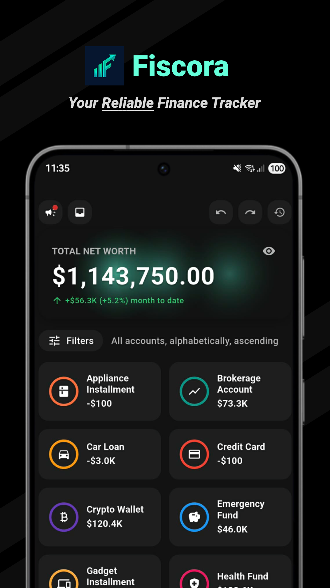
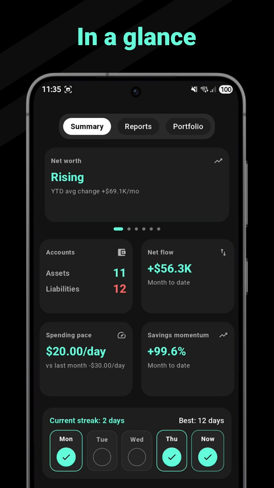
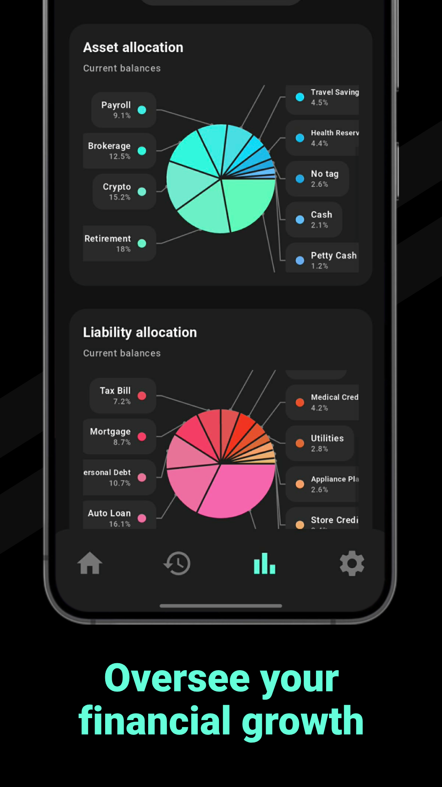
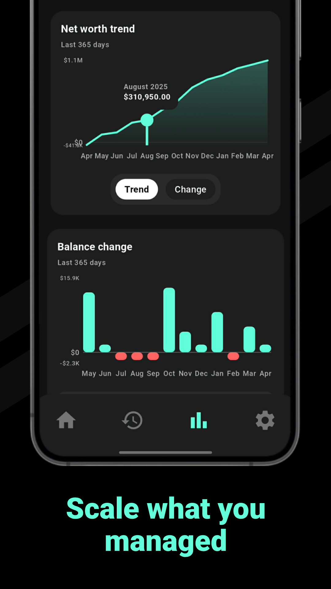
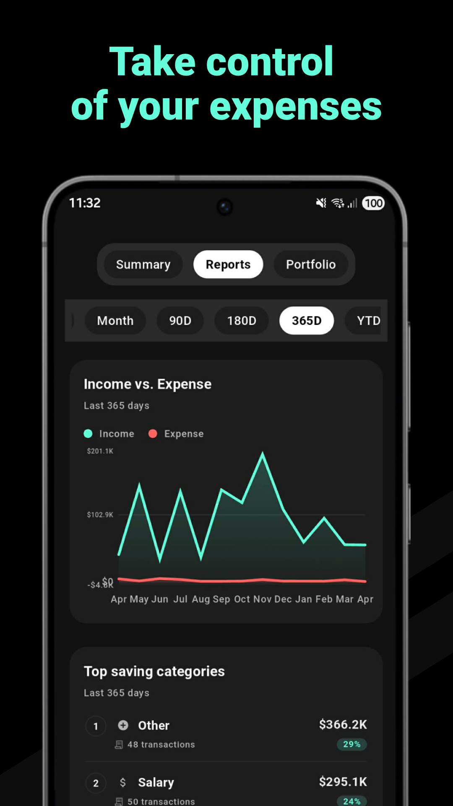
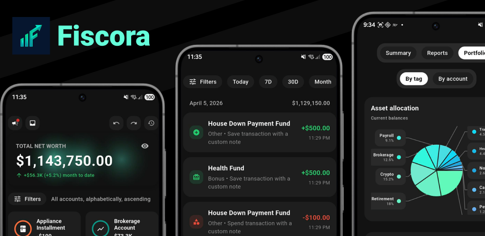

Free to start
Track accounts, expenses, and your core financial picture right away.
Now on Google Play for Android
Fiscora gives you a free core experience for tracking accounts, expenses, and everyday progress, then opens deeper PRO reports, portfolio views, encrypted backup, richer organization, and privacy conveniences when you want more depth.
Fiscora is live on Google Play for Android. Start with the free core experience, then unlock PRO in app when you want deeper reports, portfolio views, encrypted backup, and premium privacy tools.
Free to start
Track accounts, expenses, and your core financial picture right away.
Upgrade once to PRO
Unlock lifetime access to reports, portfolio views, encrypted backup, premium privacy tools, and richer organization.
Try deeper Insights first
Watch a quick rewarded ad to temporarily unlock locked Insights widgets before upgrading.

Made for real use
Trust you can verify
Fiscora is strongest when every claim is backed by something real you can see in the product or on this page.
Start tracking without creating an account or handing over your setup momentum first.
Your core finance records are positioned to stay local-first unless you choose to export or share them.
Use Fiscora for essential expense, account, and summary tracking before deciding whether PRO depth is worth it.
Reports, portfolio breakdowns, encrypted backup, and premium organization are there when your tracking grows up.
A quick rewarded ad can temporarily unlock locked Insights widgets so you can preview deeper analysis without committing yet.
Premium depth, friendly access
Fiscora is designed so the core experience stays approachable, while PRO adds deeper analysis, stronger privacy conveniences, and a cleaner way to manage growing financial data.
Reports
Portfolio
Organization and privacy tools
Free
PRO
PRO is a paid upgrade with lifetime access to deeper reports, portfolio views, premium organization, encrypted backup, 30-day action history, unlimited accounts, and additional privacy conveniences.
If you want to sample the locked Insights experience first, rewarded access can temporarily unlock it for a limited time.
Features
The screenshots below show how Fiscora supports everyday tracking, faster entry, and richer reporting when you want a deeper view.
PRO Reports
When you want more than a running list of transactions, Fiscora opens a richer reports surface for comparing income versus expense, spotting trends, and seeing where your strongest saving or spending categories are moving.
Friendly note: this deeper reports layer is part of PRO, while the free experience still lets you build the habit and see core tracking data first.

PRO Portfolio
Portfolio views make it easier to understand how assets and liabilities are distributed, whether you think in tags, accounts, or the broader shape of your money decisions.
If you want to preview this deeper layer before upgrading, rewarded access can temporarily unlock locked Insights widgets for a limited session.

Free core tracking
Fiscora stays practical at the daily level. You can review recent activity, keep your transaction flow understandable, and keep the habit lightweight without needing bank-linking or forced setup friction.

Free Insights Summary
Even before PRO, Fiscora gives you a clearer summary of momentum, net flow, account counts, and the signals that help you understand whether your routine is moving in the right direction.

Android quick add widget
If you want less friction between noticing a spend and logging it, Fiscora includes an Android home screen widget that opens a focused quick add flow in one tap.
This widget is available for Android home screens and is built for faster capture, not extra setup overhead.
Privacy and local-first
Fiscora is built for people who want visibility without handing over unnecessary control or being forced into a bank-connected setup.
Fiscora is designed so your core finance records stay on your device first unless you choose to export or share them. You can start without creating an account, and the product is shaped for people who want a private, practical way to manage money.
FAQ
No. Fiscora is designed so you can start using the app without creating an account first.
It means your core finance records are intended to stay on your device first unless you choose to export or share them.
No bank connection is required. Fiscora is positioned for users who want manual control without bank-linking pressure.
Yes. The core tracking experience is free to use, including everyday account and expense tracking plus the free Summary side of Insights.
PRO adds deeper Reports and Portfolio views, advanced filters and organization tools, transaction notes, unlimited accounts, encrypted backup, premium privacy conveniences, and 30-day action history.
Yes. When rewarded access is available, you can watch a quick rewarded ad to temporarily unlock locked Insights widgets before deciding to upgrade.
Yes. Fiscora lets you choose your preferred currency during onboarding and change it again later in settings.
Fiscora is currently available on Google Play for Android.
You can read the Privacy Policy, review the Terms of Service, or email rejuvenize@proton.me.
Get the app
Start with the free essentials, unlock PRO when you want a deeper financial picture, and use rewarded access when you want a short preview of locked Insights before upgrading.
Fiscora is available now on Google Play for Android. Download it there to start tracking right away.
